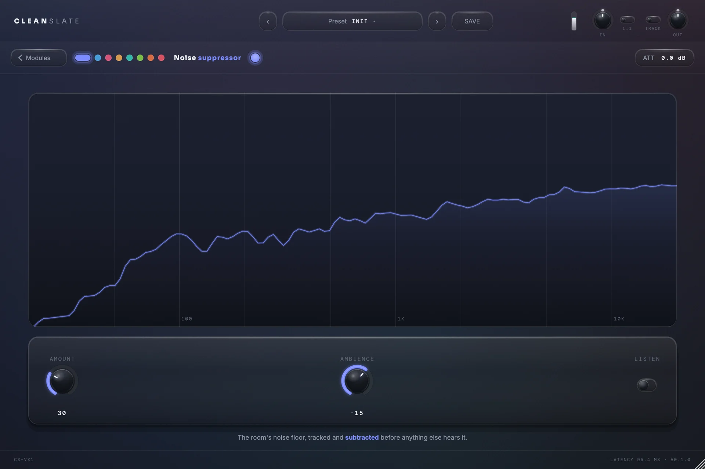
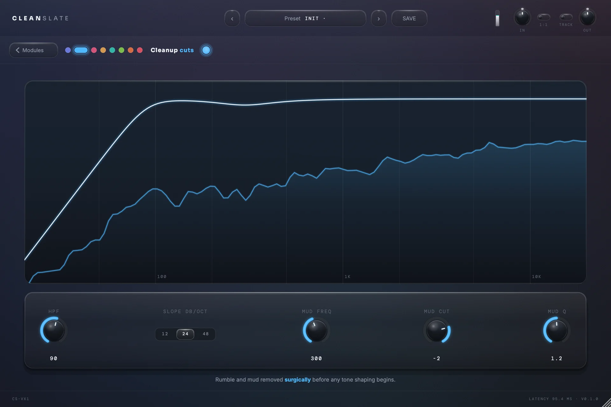
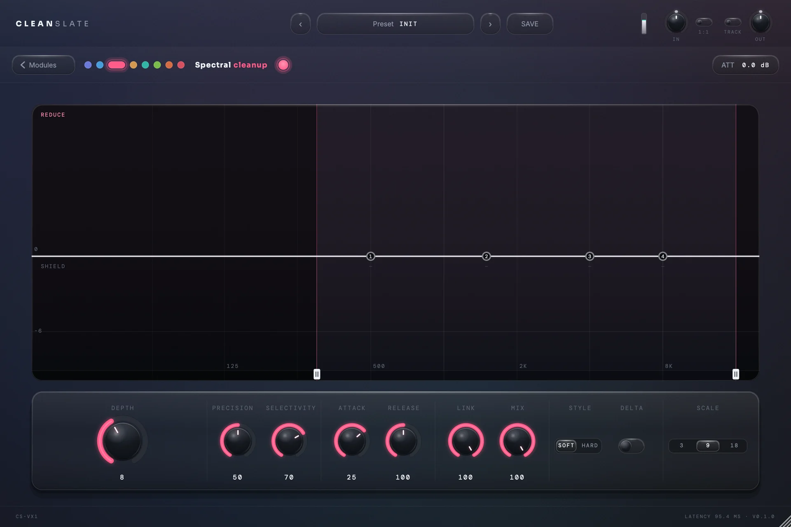
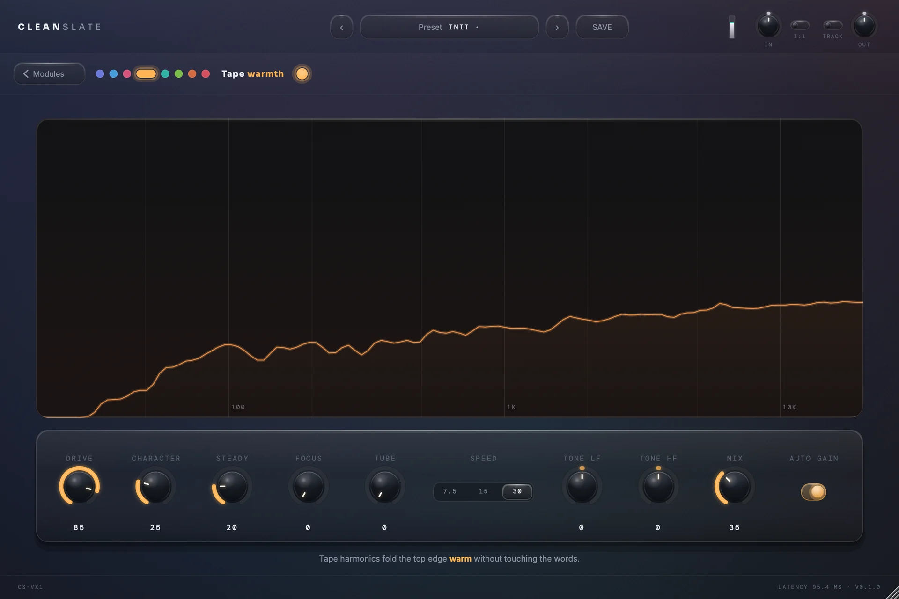
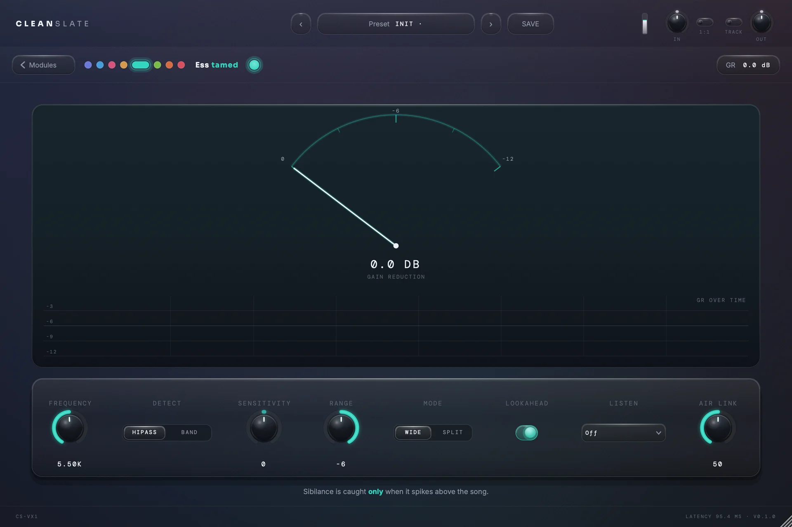
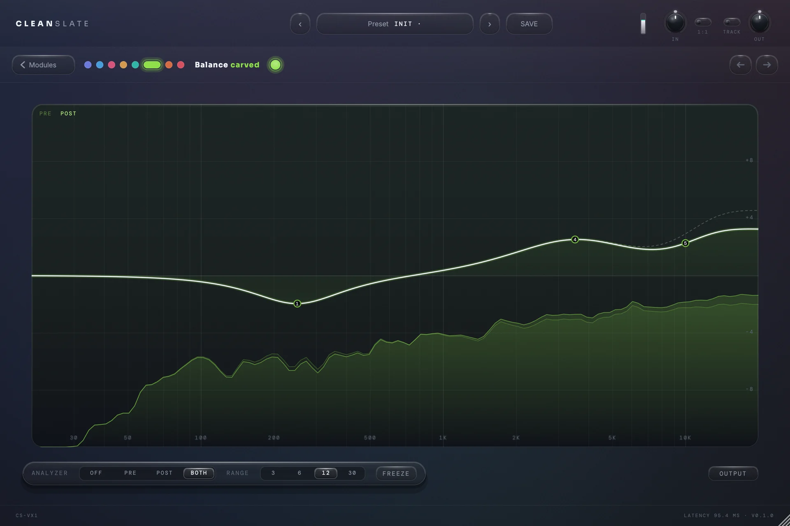
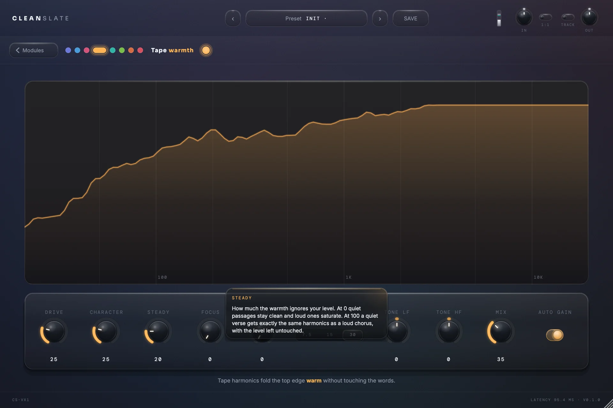
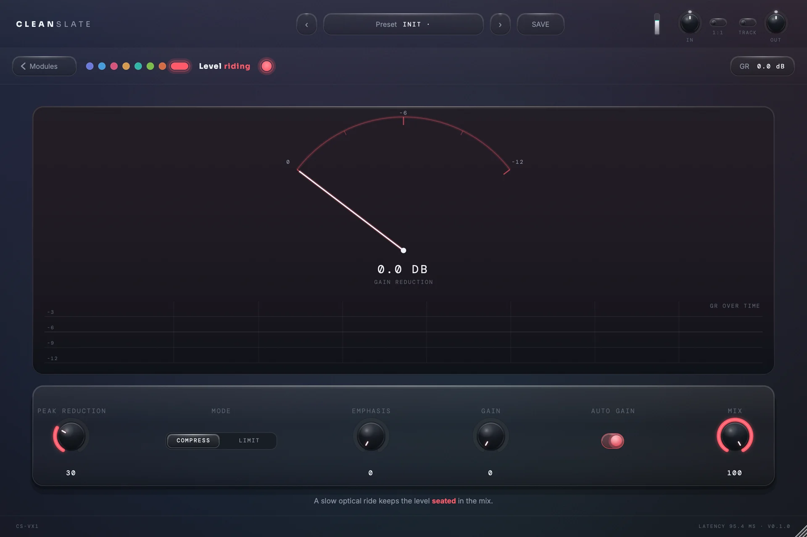
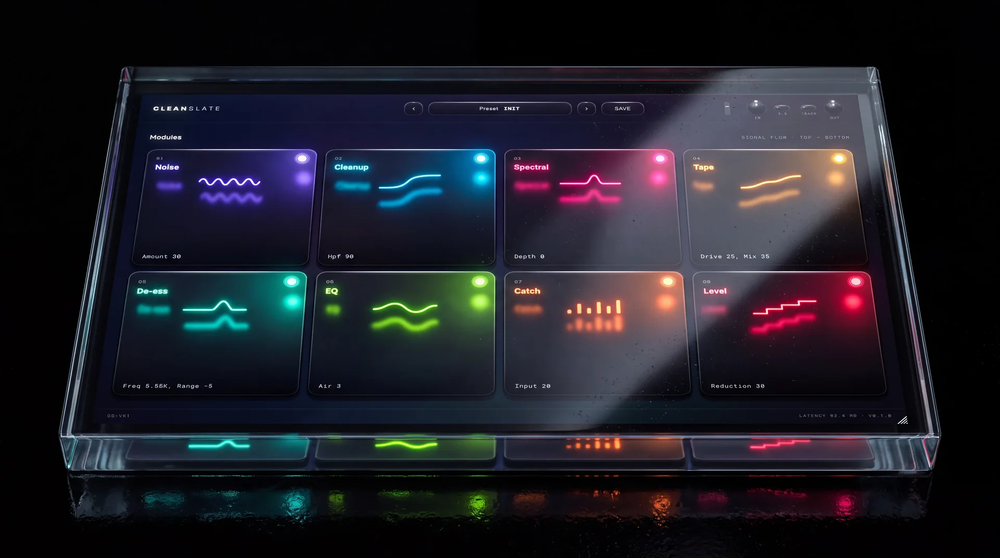
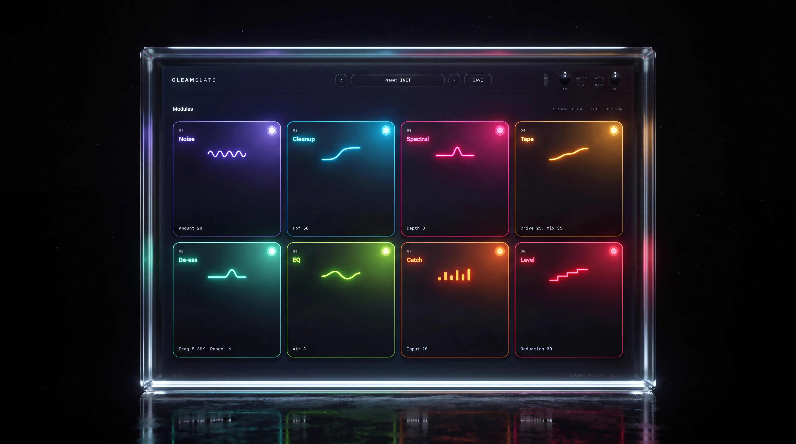

01
Noise
Adaptive suppression that kills the room, not the take. No learn button, nothing to arm — it just listens.
BADSCANDAL audio · vocal chain
The all-in-one vocal chain, made by engineers.
Instant key by email · 2 machines · works offline
What it is
CLEANSLATE is a complete vocal chain in the order a professional session runs it: noise suppression, cleanup, spectral resonance control, tape saturation, de-essing, a surgical EQ and two stages of compression, in a single window with the signal flowing top to bottom.
Every module is modelled on the analogue compressors and spectral processors engineers reach for, then tuned specifically for vocals rather than shipped as a general-purpose effect. Spectral knows the regions where a voice builds resonance and listens for them in your take; if it finds nothing, it removes nothing. The compressors, the noise suppression and the de-esser follow the same principle: prepared for the voice, acting only when the voice calls for it, with every parameter still under your control.
Switch on TRACK and the chain drops to 10.7 ms of latency, so the same processing that finishes a vocal can be sung through live.
Signal flow · top to bottom

01
Adaptive suppression that kills the room, not the take. No learn button, nothing to arm — it just listens.

02
High-pass, low-pass and the mud filter. The stuff you do on every vocal, done before you have to think about it.

03
Resonance control with four nodes and a live reduction burn. Boxiness, harshness and mic ring, carved out as they appear.

04
Oversampled tape saturation with Character, Steady, Focus and Tube. Level-invariant, so quiet takes get the same glow.

05
Adaptive threshold, no attack, no release, no lisp. Wide or split, it only ever touches the ess.

06
Twelve surgical bands, ten shapes, slopes to 96 dB, per-band dynamics. Air Link lifts the top as the de-esser works.

07
A FET compressor in the classic fast style: grabs the peaks, adds the grit, holds the vocal in front.

08
Opto levelling after the catch. Slow, musical, invisible — the reason the vocal never leaves the mix.

CLEANSLATE
The boring bits

CLEANSLATE · v1
One licence. Every DAW you own. The whole vocal chain, in the order it should run, in one window. Pay once and the key is in your inbox before you've closed the tab.
Instant key by email2 machinesWorks offlineMonthly updates
Questions
If your DAW loads AU or VST3, yes. Logic, Ableton, FL, Cubase, Studio One, Reaper, Bitwig, Luna and GarageBand are all covered. Pro Tools (AAX) isn't at launch — if you need it, tell us and it moves up the list.
You get a key by email. Enter it once on each machine (up to two), and from then on the plugin works with no internet at all. Deactivate a seat yourself when you change computers. Until a key is entered the plugin passes audio through clean, so a session never goes silent.
Not yet. Everything on this page is the real plugin, recorded through it. If it doesn't do what it says on a vocal you own, write to us within 14 days and we'll sort it.
Yes. We treat a purchase as something to maintain and improve, not something to sell and forget. CLEANSLATE receives one update every month, refining the existing modules and adding new features, with a single aim: the most efficient all-in-one vocal chain for producers and artists.
That roadmap is shaped by the people using it. Send feature requests or bug reports to contact@badscandal.com and we will address them.